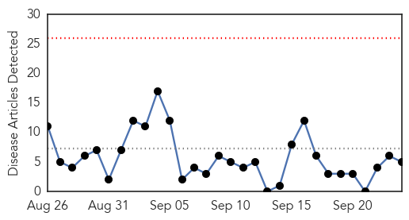
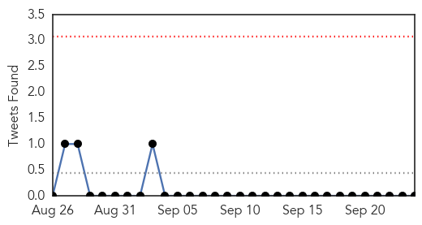
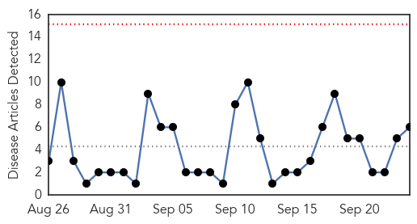
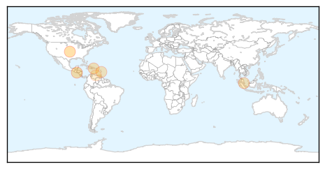
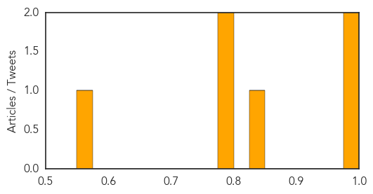

Cholera
30-Day Web Trend
0 alerts, 0 warnings

30-Day Twitter Trend
0 alerts, 0 warnings

Article Locations

Article Confidences

Top Articles:
Top Tweets:
-
No tweets found for Sep 24, 2014
Chikungunya
30-Day Web Trend
0 alerts, 0 warnings

30-Day Twitter Trend
3 alerts, 0 warnings

Article Locations
Article Confidences
Top Articles:
- 0.989
- El Salvador says nearly 30,000 infected with mosquito-borne chikungunya - World
- 0.988
- More than 1,600 People Affected by Chikungunya in Colombia
- 0.835
- Bad Blood: Chikungunya Kills and It's Coming to a Mosquito Near You
- 0.797
- Details of monkey antibodies against chikungunya virus could help to fight the disease in humans
- 0.779
- Is there more untold about chikungunya?
- 0.566
- Reporting on possible Ebola outbreak in Venezuela treated as campaign against the state
Top Tweets:
-
No tweets found for Sep 24, 2014